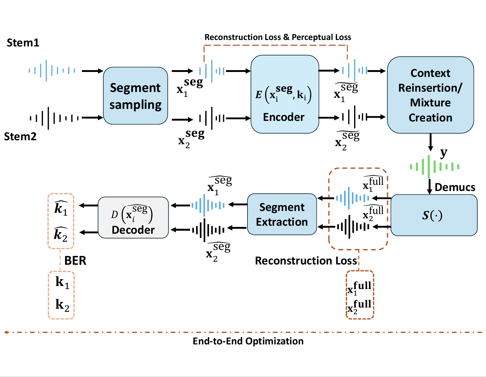

Supplementary Material for Research Paper (Anonymous)
This demo illustrates a separation-first, multi-stream audio watermarking framework. Two stems are independently watermarked, mixed, separated, and decoded. Baseline methods may fail to recover watermarks after separation, while our jointly trained approach demonstrates high post-separation decoding accuracy and good perceptual quality.
The following diagram replicates Figure 1 from the research paper, showing the full pipeline:
